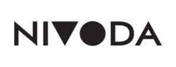

Trade Mark Journal No.2025/026 27 June 2025
UK00004192717 22 April 2025 (9,35,36,39,42,45)
Mark 1

Mark 2
- Class 9
- Downloadable applications; downloadable mobile applications; mobile applications for business-to-business trading of diamonds and gemstones; computer software platforms for buying and selling jewellery, diamonds, precious gemstones, semi-precious gemstones; collaboration software platforms; e-commerce software; computer e-commerce software to allow users to perform electronic business transactions via a global computer network.
- Class 35
- Providing trade information services and computerised online services in relation to jewellery, diamonds, precious gemstones, semi-precious gemstones; providing information about buying and selling, and trading in the field of jewellery, diamonds, precious gemstones, semi-precious gemstones; marketing and promotional services; pricing analysis; providing pricing information about the goods and services of others via the global computer network; providing an online marketplace for trade buyers and sellers of jewellery, diamonds, precious gemstones, semi-precious gemstones; online retail services connected with jewellery, diamonds, precious gemstones, semi-precious gemstones; consultancy, information and advisory services in relation to all the aforesaid.
- Class 36
- Providing financial information in relation to jewellery, diamonds, precious gemstones, semi-precious gemstones; brokerage and clearing house services in relation to jewellery, diamonds, precious gemstones, semi-precious gemstones provided both online and non- online ; provision for pricing information in relation to jewellery, diamonds, precious gemstones, semi- precious gemstones ; valuation services of jewellery, diamonds, precious gemstones, semi-precious gemstones; jewellery appraisal; electronic commerce payment services; consultancy, information and advisory services in relation to all the aforesaid.
- Class 39
- Logistics, warehousing, and global delivery services for jewellery, diamonds, precious and semi-precious stones and gemstones; packaging, handling, and transportation of jewellery, diamonds, gemstones, precious and semi-precious stones; freight forwarding and customs clearance services; tracking of shipments via global computer networks; consultancy, advisory and information services in relation to all the aforesaid.
- Class 42
- Platform as a service in the field of e-commerce; software as a service in the field of e-commerce; providing temporary use of online, non-downloadable e-commerce software to allow users to conduct electronic business transactions in online marketplaces via a global computer network; authenticating jewellery; authenticating diamonds; diamond authentication and certification services; consultancy, information and advisory services in relation to all the aforesaid.
- Class 45
- Identity verification services; know your customer (KYC) and anti-money laundering (AML) compliance services; fraud detection and prevention in online marketplaces; authentication of identity documents and compliance credentials for buyers and sellers of jewellery and gemstones; consultancy, advisory and information services relating to regulatory compliance and fraud risk mitigation; information and advisory services in relation to all the aforesaid.
Nivoda Limited
Representative: Lee & Thompson LLP